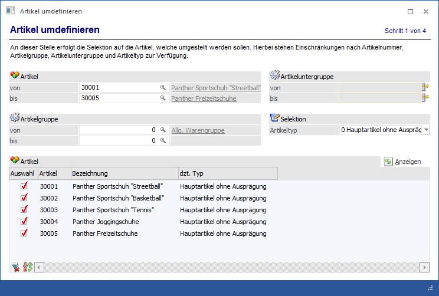
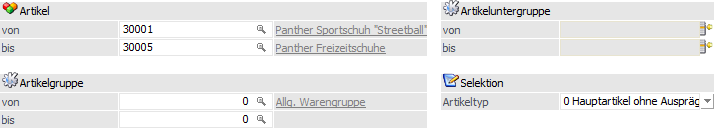
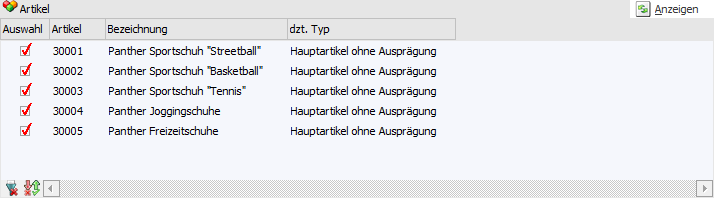
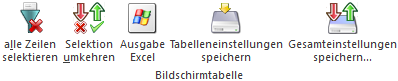

In dem Bereich "Auswahl der Artikel" kann definiert werden, welche Artikel umgestellt werden sollen.

Folgende Möglichkeiten werden zur Selektion angeboten:
Selektion

Ø Artikel von / bis
An dieser Stelle kann eine Einschränkung aufgrund der Artikelnummern erfolgen.
Ø Artikelgruppe von / bis
Hier kann eine Einschränkung über die Artikelgruppen (d.h. deren Artikel umgestellt werden sollen) erfolgen.
Ø Artikeluntergruppe von / bis
Hier kann eine Einschränkung mit Hilfe der Artikeluntergruppen (d.h. deren Artikel umgestellt werden sollen) durchgeführt werden.
Ø Selektion
An dieser Stelle kann definiert werden, welcher Artikeltyp umgestellt werden soll.
ü 0 - Hauptartikel ohne
Ausprägung
Diese Option wird verwendet, wenn Hauptartikel umgestellt werden
sollen, welche bisher noch keine Ausprägung definiert haben.
ü 1 - Hauptartikel mit
Ausprägung
Mit dieser Option können Hauptartikel umgestellt werden, welche
bereits mit einer Ausprägung versehen sind, aber noch eine weitere Ausprägung
hinzubekommen sollen.
Beispiel
Der Artikel "10022" wurde bisher mit der Ausprägung "Größe" geführt. Nun soll zusätzlich auch eine Identnummer vergeben / verwaltet werden können.
Anzeigen

Ø Anzeigen
Durch Anwahl des Buttons "Anzeigen" wird die Tabelle der Umstellungsartikel gemäß der zuvor getroffenen Selektion gefüllt.
Tabelle "Umstellungsartikel"

Nach Drücken des "Anzeigen"-Buttons werden alle der Selektion entsprechenden Artikel in der Tabelle angezeigt. In dieser kann folgende Einstellung vorgenommen werden:
Ø Auswahl
Durch Aktivierung dieser Option kann definiert werden, welche Artikel umdefiniert werden sollen.
Tabellenbuttons

Ø alle Zeilen selektieren
Durch Anwahl des Buttons "alle Zeilen selektieren" werden alle Zeilen selektiert.
Ø Selektion umkehren
Mit Hilfe dieses Buttons werden alle selektierten Zeilen deselektiert und alle nicht selektierten Zeilen selektiert.
Ø Ausgabe Excel
Durch Anwahl des Buttons "Ausgabe Excel" wird der Inhalt der Tabelle an Microsoft Excel übergeben.
Ø Tabelleneinstellungen speichern
Die Spalten einer Tabelle können grundsätzlich an beliebige Positionen verschoben, bzw. in der Breite entsprechend angepasst werden. Durch Anwahl des Buttons "Tabelleneinstellungen speichern" werden die Einstellungen benutzerspezifisch gespeichert und bei dem nächsten Aufruf des Programmpunktes wieder vorgeschlagen.
Ø Gesamteinstellungen speichern
Im Gegensatz zu "Tabelleneinstellungen speichern" können mit "Gesamteinstellungen speichern" mehrere Tabellenaufbauten gespeichert und nach Wunsch geladen werden. Zusätzlich werden Sonderfunktionen der Tabelle (z.B. "Spalte gruppieren") ebenfalls bei der Speicherung bedacht.